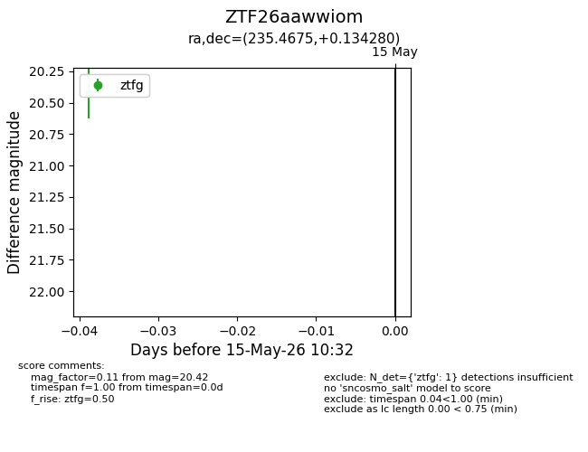
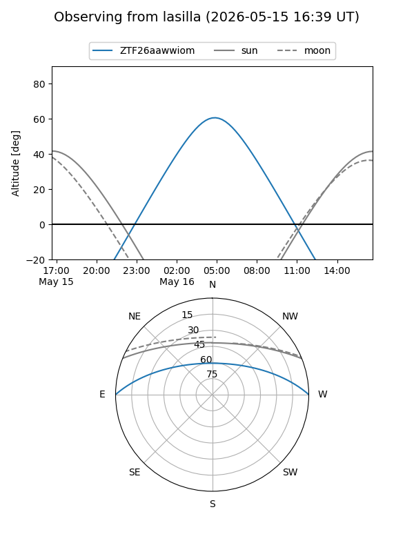
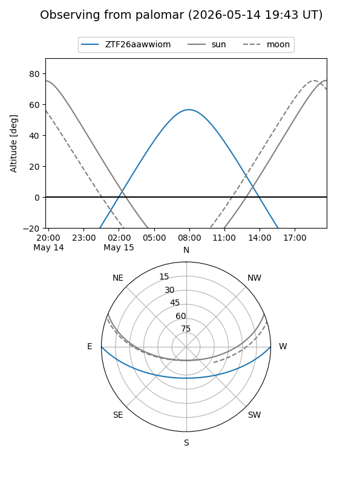

ZTF26aawwiom
Target ZTF26aawwiom at 2026-05-15 10:34
Aliases and brokers:
FINK: link
Lasair: link
ALeRCE: link
alt names
ZTF26aawwiom (ztf,fink_ztf)
Coordinates:
equatorial (ra, dec) = 235.4675,+0.13428
equatorial (HMS+DMS) = 15:41:52.19,+00:08:03.41
galactic (l, b) = (6.7044,+41.00314)
Flags:
Photometry:
last ztfg=20.42
1 ztfg detections
Lightcurve

Visibility


Additional plots